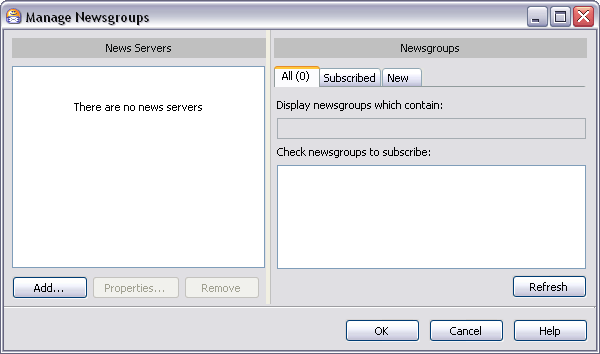
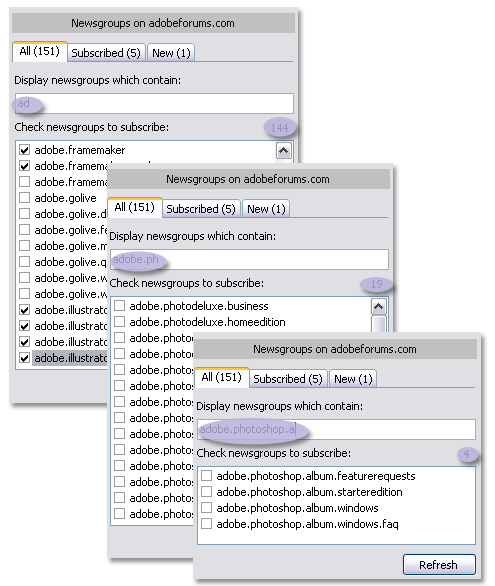
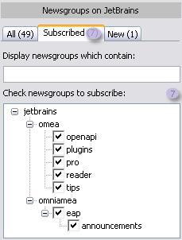
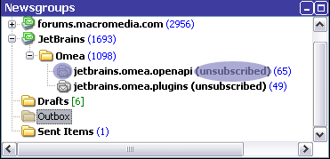
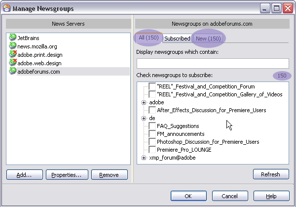

Manage Newsgroups Dialog
This dialog enables you to subscribe to and unsubscribe from Internet newsgroups. You can access this dialog in the following ways:
- Main menu: Tools | Manage Newsgroups
- Context menu: newsgroup nodes in the Newsgroups panel when the News resource tab is selected.
- Resource list toolbar: Manage Newsgroups button

The Manage Newsgroups dialog (No news servers subscriptions added)
News Servers
The list in this group box shows the news servers you currently have set up in Omea ReaderOmea Pro. The group also contains buttons that enable you to manage the list of news servers (more below).
Add Button
Use this button to add a news server to the list of news servers you access with Omea ReaderOmea Pro. Clicking the button (or pressing Alt + A) pops up the Add News Server dialog where you can specify the information needed to access the added news server.
Properties Button
Use this button to view and change the access information for the news server currently selected in the News Servers list. Clicking this button (or pressing Alt + P) pops up the News Server Properties dialog where you can view and edit the currently selected server's properties.
Remove Button
Clicking this button (or pressing Alt + R) removes the currently selected news server from the News Servers list, together with all subscriptions to newsgroups on that server.
Refresh Button
This button refreshes the listing of newsgroups on the selected news server. If the news server works properly, the information about the changes on it (for example, appearing of new newsgroups) is reflected in the New tab, but you may use this button to make the news server retrieve information about the new and existing newsgroups on the server.
Newsgroups
This group box displays the list of newsgroups available on the news server currently selected in News Servers. It also provides a means to search the available newsgroups, to subscribe to or unsubscribe from newsgroups, and see the list of the newsgroups you are subscribed to.
All Tab
Displays the list of all available newsgroups available on the news server selected in News Servers part of the Manage Newsgroups dialog.
Searching Newsgroups
Some news servers contain many newsgroups which, in turn, may contain many sub-newsgroups. By default, the Check newsgroups to subscribe list presents newsgroups on the currently selected news server in a treeview, with any sub-newsgroups listed under the main one.
In such cases, you may be able to locate the newsgroup(s) you want by a search using the Display newsgroups that contain search box. Search is automatic as you type characters in the text box. The more characters you enter, the narrower your search becomes, as shown below.

Results of progressive newsgroup search as you type. Check box beside any newsgroup to subscribe.
Subscribing and Unsubscribing
Once you've located a newsgroup, simply check the box beside the name to subscribe to it or, if already subscribed, clear the check box to unsubscribe (see figure above) and click OK of the Manage Newsgroups dialog.
If you browsing the listing of newsgroups (i.e., not using search, note that subscribing or unsubscribing to/from a newsgroup affects the selected newsgroup only. The subscription status of any sub-newsgroups is not affected.
Subscribed Tab
Once you have already subscribed to some newsgroups using All tab of the Manage Newsgroups dialog, the newsgroups you are subscribed to appear in the Subscribed tab. If you are not subscribed to any of the newsgroups which exist on this server, nothing is shown in the counter of newsgroups of this tab.

You can unsubscribe from the newsgroups in this tab by unchecking the box corresponding the newsgroup name and pressing OK button of the Manage Newsgroups dialog; the newsgroup name becomes greyed in the Newsgroups pane, and the news group will be marked as "unsubscribed".

New Tab
When you subscribe to some news server for the first time, this tab shows the total number and the names of newsgroups on the server, and this number is equal to the number of newsgroups of the All tab.

If you click the New tab, you will "show" the application that you are informed about the newsgroups which exist on the site.
When some new newsgroups appear on the site later, the counter of the New tab changes and corresponds to the number of the newsgroups which appeared on the news server since the last time you refreshed your newsgroups subscription on the server.